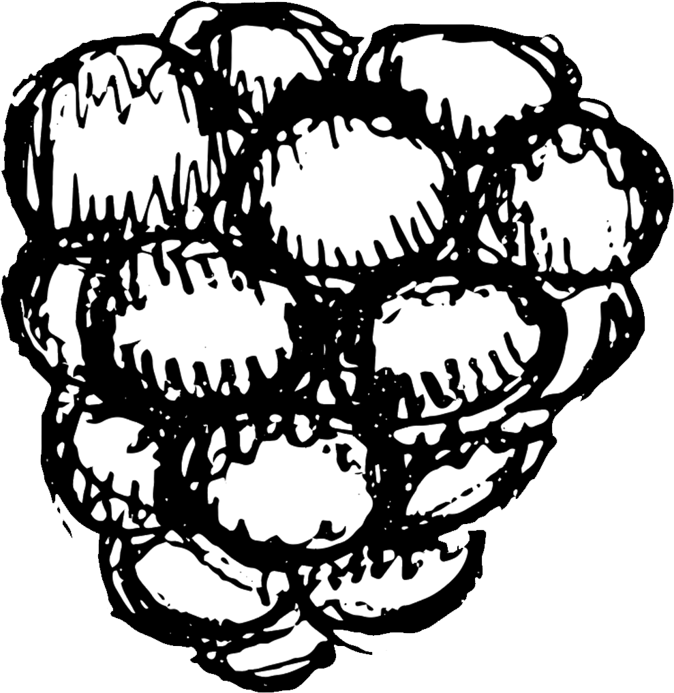

moestuinen
moestuinen is niet alleen goed voor het milieu, maar ook voor jou! Hieronder vind je de vijf belangrijkste redenen waarom je zou moeten beginnen met moetuinen
moestuinen is goed voor je lichamelijke gezondheid

